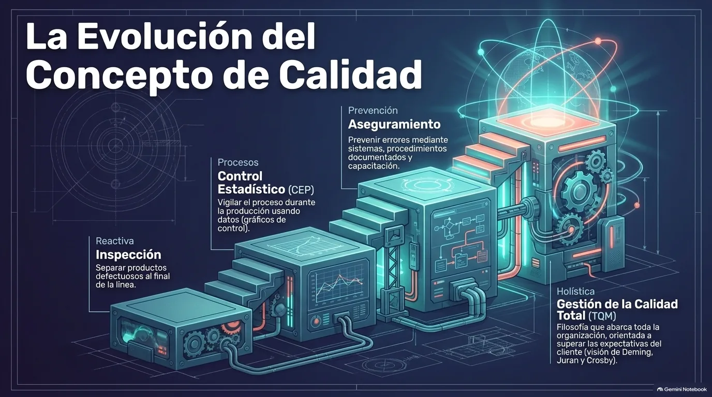
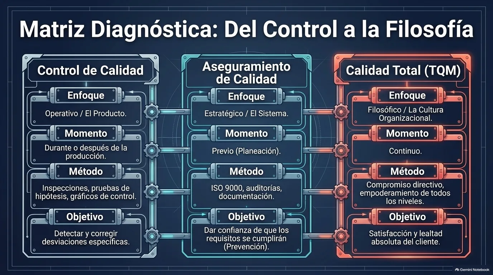
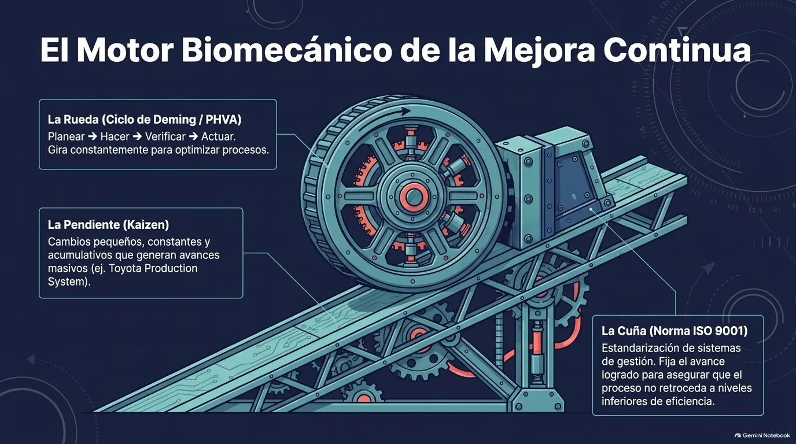

Unidad IV · Tema 4.3
La Calidad
La calidad dejó de ser una revisión al final de la línea de producción para convertirse en una forma de dirigir toda la empresa. Hoy abarca el diseño, la producción, la entrega, el servicio postventa y la relación con el cliente, y es un factor decisivo de competitividad.
4.3.1¿Qué es la calidad?
La calidad es el conjunto de características de un producto o servicio que le permiten satisfacer las necesidades y expectativas de los clientes, o incluso superarlas. Al principio se asociaba solo con la ausencia de defectos; ahora abarca todos los aspectos de la empresa. Los autores clásicos la han definido desde distintos enfoques:
Joseph M. Juran
Adecuación al uso.
Philip B. Crosby
Cumplimiento de los requisitos establecidos.
W. Edwards Deming
Grado predecible de uniformidad y fiabilidad, a bajo costo y adecuado al mercado.
4.3.2Evolución del concepto de calidad
La forma de entender y manejar la calidad ha pasado por cuatro etapas:
- Inspección (reactiva): se revisan los productos terminados para separar los defectuosos de los aceptables.
- Control estadístico de la calidad (procesos): se usan técnicas estadísticas, como los gráficos de control, para vigilar el proceso y detectar desviaciones durante la producción.
- Aseguramiento de la calidad (prevención): se busca prevenir los errores mediante sistemas, procedimientos y documentación que garanticen el cumplimiento de los requisitos.
- Gestión de la calidad total (holística): toda la organización participa en mejorar continuamente sus procesos para satisfacer por completo al cliente.

Nota. Infografía del material didáctico de la Unidad 4 de Gestión Empresarial (ESCOM - IPN), generada con Gemini Notebook.
4.3.3Dimensiones de la calidad
La calidad de un producto puede evaluarse desde varias dimensiones:
| Dimensión | Pregunta que responde |
|---|---|
| Desempeño | ¿Qué tan bien cumple su función principal? |
| Confiabilidad | ¿Qué probabilidad hay de que funcione bien durante cierto tiempo? |
| Durabilidad | ¿Cuánto tiempo dura? |
| Conformidad | ¿Qué tanto cumple con las especificaciones? |
| Estética | ¿Cómo se ve y cómo está diseñado? |
En los servicios pesan mucho la rapidez en la atención, la amabilidad y empatía del personal, la capacidad de respuesta ante los problemas y la seguridad que se transmite al cliente. También influye la percepción de calidad, es decir, la opinión que el cliente se forma del producto o de la marca, porque de ella depende que compre y que vuelva a comprar.
4.3.4Control de calidad y aseguramiento de la calidad
El control de calidad comprende las técnicas y actividades operativas para verificar que los productos o servicios cumplan con los estándares, mediante inspecciones, pruebas y mediciones durante o después de la producción. Su objetivo es detectar y corregir desviaciones. En el control estadístico de procesos (CEP), la herramienta principal es el gráfico de control, apoyado por técnicas como las pruebas de hipótesis y el análisis de regresión; el primer paso para implementarlo es definir con claridad qué se va a medir.
El aseguramiento de la calidad, en cambio, es preventivo: se enfoca en acciones planeadas y sistemáticas que dan confianza de que el producto cumplirá los requisitos, trabajando sobre los procesos, la capacitación, la documentación y el manejo de proveedores. Ambos se complementan dentro de un sistema de gestión de la calidad más amplio.
| Control de calidad | Aseguramiento | Calidad total (TQM) | |
|---|---|---|---|
| Enfoque | Operativo: el producto | Estratégico: el sistema | Filosófico: la cultura organizacional |
| Momento | Durante o después de la producción | Previo (planeación) | Continuo |
| Método | Inspecciones, pruebas, gráficos de control | ISO 9000, auditorías, documentación | Compromiso directivo y participación de todos los niveles |
| Objetivo | Detectar y corregir desviaciones | Dar confianza de que se cumplirán los requisitos | Satisfacción y lealtad del cliente |

Nota. Infografía del material didáctico de la Unidad 4 de Gestión Empresarial (ESCOM - IPN), generada con Gemini Notebook.
4.3.5Calidad total y mejora continua
La gestión de la calidad total (TQM, por sus siglas en inglés) es una filosofía de dirección cuyo fin último es la satisfacción del cliente, haciendo que todos los miembros de la organización participen en mejorar constantemente productos, servicios y procesos. Se apoya en principios como el enfoque al cliente, el liderazgo de la dirección, el compromiso del personal, la gestión basada en procesos, la toma de decisiones con base en datos y las buenas relaciones con los proveedores. Su implementación efectiva exige el compromiso de todos los niveles de la organización, no solo de la alta dirección.
La mejora continua, llamada kaizen en la tradición japonesa, consiste en hacer cambios pequeños pero constantes que, acumulados, generan avances importantes en eficiencia y calidad. El Sistema de Producción Toyota es un ejemplo clásico: pone énfasis en la eficiencia, la mejora continua y la respuesta rápida a los problemas de calidad. Normalmente se aplica con el ciclo PHVA (de Deming):
P · Planear
Definir el problema, objetivos y acciones.
H · Hacer
Ejecutar lo planeado, de preferencia a pequeña escala.
V · Verificar
Medir resultados y compararlos con lo esperado.
A · Actuar
Estandarizar lo que funcionó y reiniciar el ciclo.

Nota. Infografía del material didáctico de la Unidad 4, con base en Deming (1986) e Imai (1986).
4.3.6Normas y sistemas de gestión de la calidad
Para dar uniformidad y credibilidad a las prácticas de calidad existen normas internacionales como la serie ISO 9000, de la Organización Internacional de Normalización. En particular, la norma ISO 9001 establece los requisitos de un sistema de gestión de la calidad e incluye elementos como el enfoque al cliente, el liderazgo, la planificación, el apoyo de recursos, la operación, la evaluación del desempeño y la mejora.
Las empresas pueden certificar su sistema ante organismos acreditados, lo que genera confianza en los clientes, facilita el acceso a nuevos mercados y mejora su imagen. También existen modelos de excelencia y premios, como el modelo europeo EFQM o el Premio Nacional de Calidad de cada país, que sirven como referencia para autoevaluarse.
4.3.7Importancia y beneficios de la calidad
La calidad influye directamente en la satisfacción y lealtad de los clientes, en la reputación de la marca y en la rentabilidad. Una buena gestión reduce los costos de errores, desperdicios, reprocesos y garantías; aumenta la productividad; mejora el ambiente de trabajo al involucrar al personal en resolver problemas, y facilita cumplir las normas legales y los requisitos de los clientes. Cuando falta calidad aparecen pérdidas económicas, quejas, devoluciones y deterioro de la imagen.
Escape game: Calidad en la gestión empresarial
Comprueba tu comprensión
Verifica que distingues las etapas, dimensiones y enfoques de la calidad.